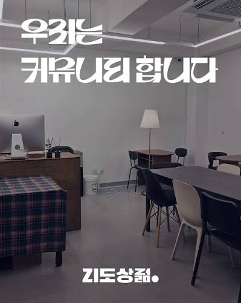

믿는다면, 박수를 쳐주세요Clap Your Hands If You Believe
지역 청년들이 모이고 교류할 수 있는 커뮤니티 공간을 위해, 한국의 생일카페 문화를 VR 경험으로 재해석했습니다. '어린왕자'의 세계관을 바탕으로, 팬과 아티스트를 더 깊이 연결하는 몰입형 콘텐츠를 만들었습니다. For a local community space where young people could gather and connect, I reimagined Korea's birthday café culture as a VR experience. Built around the world of The Little Prince, it's an immersive experience that deepens the connection between fans and artists.

챌린지Challenge
모일 이유를 디자인하다.
Designing a reason to gather.
Jidostore는 지역 주민들이 한데 모이는 것을 목표로 하는 커뮤니티 공간입니다. 젊은 세대가 방문하고, 서로 연결될 수 있는 더 매력적인 공간을 만드는 것이 목표였습니다.
Jidostore is a community space that aims to gather people in the local area. The main goal was to make the place more attractive for the younger generation to visit and connect with each other.
IdeationIdeation
K-pop Birthday Cafe
K-pop Birthday Cafe
K팝 팬덤에는 공간을 대관해 아이돌의 생일을 축하하는 문화가 있습니다. 하지만 대부분 사진을 주고받거나 커피만 마시고 돌아가서, 서로 연결되거나 그 아이돌을 경험하기엔 부족했습니다.
K-pop fandoms have a culture of celebrating their idol's birthday by renting out a space. But most visits end with just exchanging photos or grabbing a coffee, without really connecting with each other or experiencing the idol itself.
컨셉Concept
VR birthday cake with stories of my idol
VR birthday cake with stories of my idol
아이돌을 더 깊이 분석해, 그 컨셉에 맞는 VR 콘텐츠를 경험하는 공간을 제안했습니다. SM엔터테인먼트 소속 그룹 RIIZE의 멤버 앤톤(Anton)의 생일을 기념해 기획한 프로젝트입니다.
We proposed a space where fans could experience VR content built around a deeper analysis of the idol's concept. This project was planned to celebrate the birthday of Anton, a member of RIIZE under SM Entertainment.
VR 씬 전체 디자인
Overall VR scene design
경험 디자인Experience Design
축하가 이야기가 되다.
Celebration becomes storytelling.
앤톤의 인터뷰와 활동 영상을 분석해보니 '마음이 여린', '감수성이 풍부한'이라는 이미지가 두드러졌습니다. 그래서 저희는 '어린왕자'를 테마로 정했습니다. 그리고 "Clap your hands if you believe"라는 문구를 인터랙션으로 가져와, 박수를 치면 앤톤의 성장 이야기가 나타나고 팬들이 그를 응원했던 순간들을 함께 떠올릴 수 있도록 만들었습니다.
Analyzing Anton's interviews and activity videos, one impression stood out again and again: soft-hearted and deeply sensitive. So we chose The Little Prince as our theme, and borrowed the phrase "Clap your hands if you believe" as the interaction itself: clapping reveals Anton's growth story and lets fans relive the moments they cheered him on.
사용자는 케이크를 직접 꾸미고, 박수를 쳐서 축하합니다. 그러면 촛불이 켜지고 앤톤을 상징하는 오브젝트들이 나타나며, 그 순간부터 그의 이야기가 시작됩니다.
Users decorate the cake themselves, then clap to celebrate. The candles light up, objects symbolizing Anton appear, and from that moment, his story begins.
손으로 케이크 꾸미기
Decorating the cake by hand
박수 치면 촛불이 켜진다
Clapping lights the candles
앤톤의 성장 이야기가 시작된다
Anton's story begins
전체 경험 영상. 촛불이 켜지는 순간 노래가 흘러나옵니다.
The full experience. A song plays the moment the candles light up.
실제 참여자들의 모습
Participants experiencing it
회고Reflection
- VR이라는 매체가 가진 특성을 살려 컨셉을 잡고 디자인하는 과정을 직접 경험해볼 수 있었습니다.
- 온오프라인의 경계를 허물기 위해 기술을 어떻게 활용할지 직접 고민하고 설계해볼 수 있었습니다.
- I got to experience conceiving and designing a concept that leans into what makes VR unique as a medium.
- I got to directly think through and design how technology could be used to break down the boundary between offline and online.